From case to billing, all in one place.
Consignment case tracking and procurement for a Thai medical‑device distributor. One team, one platform, from the operating room to the paid invoice.
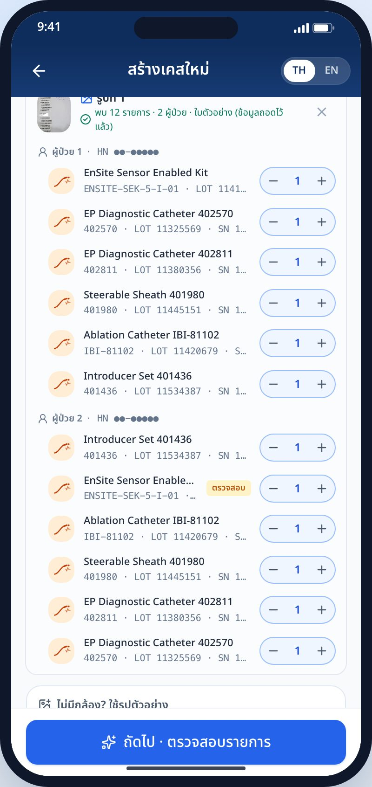
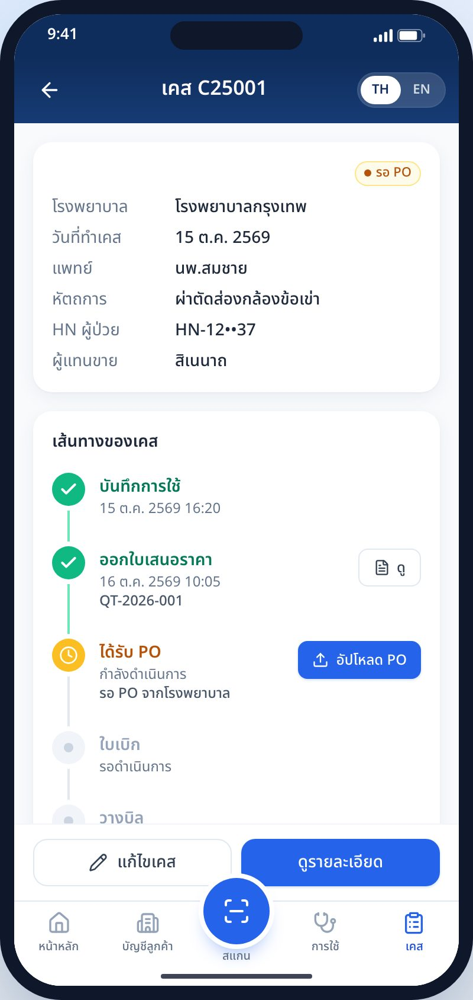
Today a case lives in a LINE photo, an Excel sheet and somebody's memory.
The hospital pays only for what is used in surgery. Between the operating room and the payment, the same items are typed three times and the PO is chased by phone.
Surgery uses items
OR shelfPhoto of the usage sheet
LINEThe photo is the only record. Handwriting is hard to read.Re‑typed at night
Excel15 minutes a case, with errors in lot numbers.Quotation
LINE / emailAdmin types it again, sometimes from the wrong price list.Chase the PO
PhoneThe PO arrives weeks later. Nobody knows which case it is for.Refill the shelf
PaperWarehouse can't see what was used or what is expiring.Invoice
ERPNo list of billable cases, so some are never billed.Five measures decide whether this works.
| Pain | Who feels it | Measure | Before | Target | |
|---|---|---|---|---|---|
| Usage typed by hand from photos and paper | Sales rep, admin | Minutes to record a case | 15 min | → | 3 min |
| Cases that are never billed | Finance, management | Share of used items billed | ~92% | → | 99.5% |
| Slow cash | Finance | Days from usage to invoice | 21 d | → | 7 d |
| Expired stock in hospitals | Warehouse | Expired write‑off per year | 3% | → | <1% |
| No visibility without phone calls | Manager | Status known per case and hospital | No | → | Live |
The rep works from a phone in the OR. Everyone else works from the back office.
- Sales representativeSees only assigned hospitals. Creates a case, photographs or scans the stickers, follows the case to billing, looks up any lot.
- Sales managerApproves from anywhere: discounts over 10%, requisitions, purchase requests.
- Sales adminQuotation from the case usage, records the hospital PO, raises the requisition.
- WarehouseReceives goods with lot and expiry, refills hospital shelves, watches expiry 90 days ahead.
- PurchasingTurns approved purchase requests into supplier POs.
- AccountingInvoices against the PO, marks paid, closes the case.
- System adminHospitals, doctors, products, contract prices, users.
- Hospital purchasingReceives the quotation by email or LINE, replies with a PO.
- SupplierReceives the supplier PO.
- ServicesClaude vision, LINE Messaging, email, SSO, ERP export.
Every case moves through eight states, and each step leaves a document behind.
DRAFTสร้างเคสRepUSAGE_RECORDEDบันทึกการใช้Rep · stock cut at the hospitalQUOTEDออกใบเสนอราคาAdmin · manager if discount >10%WAITING_POรอ POHospital · follow‑up remindersPO_RECEIVEDได้รับ POAdmin or rep scans the POREQUISITIONEDใบเบิกWarehouse refills the shelfBILLEDวางบิลAccountingCLOSEDปิดเคสPaidCANCELLED is allowed from any state before BILLED. Quotation, requisition, purchase request, invoice and usage photo each have their own state machine, six in all.
Documents along the way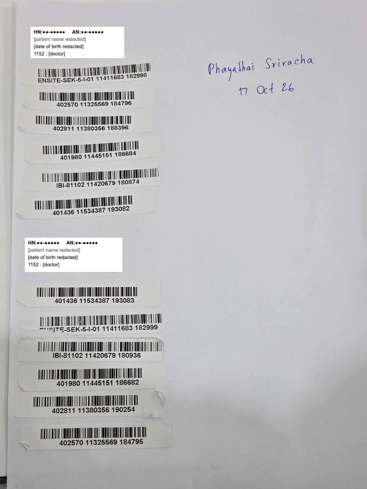
One photo of the sheet becomes one case per patient.
The rep already photographs this sheet. Each equipment sticker prints its REF, lot and serial under the barcode, and each patient sticker heads its group. The system groups stickers under their patient and reads the hospital and date from the handwriting.
Claude vision reads the printed text, patient HN / AN and doctor code.
On‑device barcodes (zxing‑wasm) when AI is unavailable, split into patients by the gaps between rows.
The rep confirms: uncertain items are flagged, quantities adjusted, missed items added.
Read the moment it is addedCamera or upload. Items appear under the photo, grouped by patient, each with − / +.
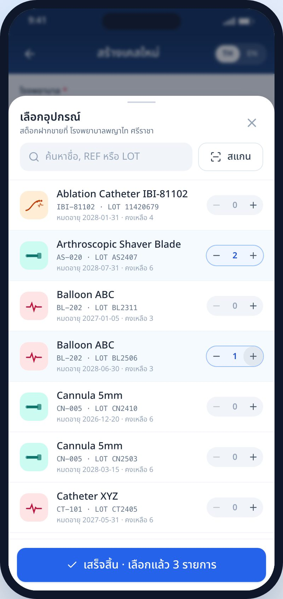
Or pick from the shelfThe hospital's consignment lots, with expiry and on‑hand. Quantity is capped at what is there.
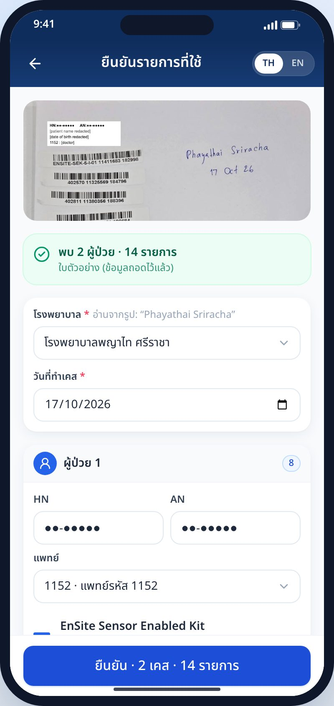
ConfirmHospital matched from the sheet. Two patients become two cases; stock is cut at that hospital.
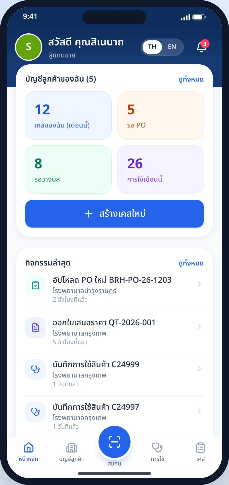
My dayCases waiting for a PO or billing, usage this month, what changed.
The case journeyEach step with its document: view the quotation, upload the PO, open the requisition or the bill.
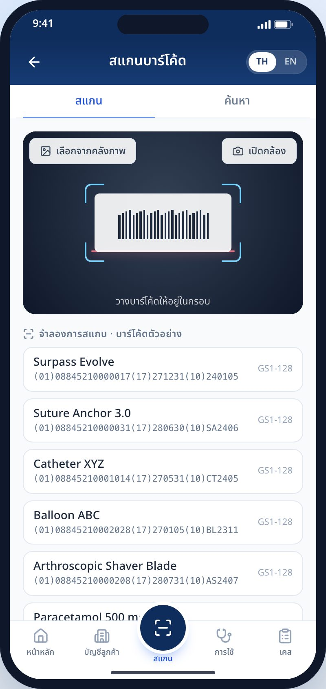
Scan or search any itemCamera, gallery or text. Stock, expiry, location and where each unit was used.
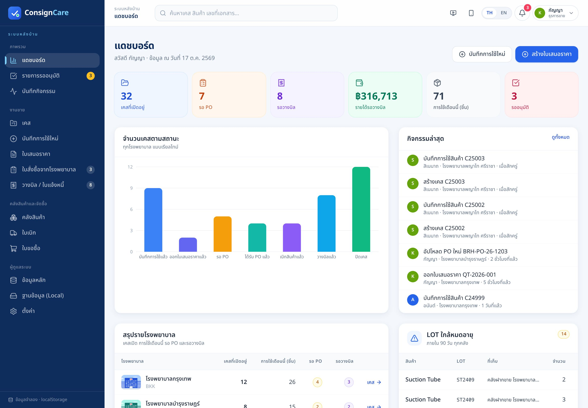
Status of every case without a phone call.
- Next step on every case, coloured by who owes it: us, the hospital or the manager.
- Approvals queue for discounts over 10%, requisitions and purchase requests. The manager decides; the record keeps who and when.
- Per‑hospital view of usage, waiting POs and unbilled value.
- Two tabs stay in sync: a case created on the phone appears here at once.
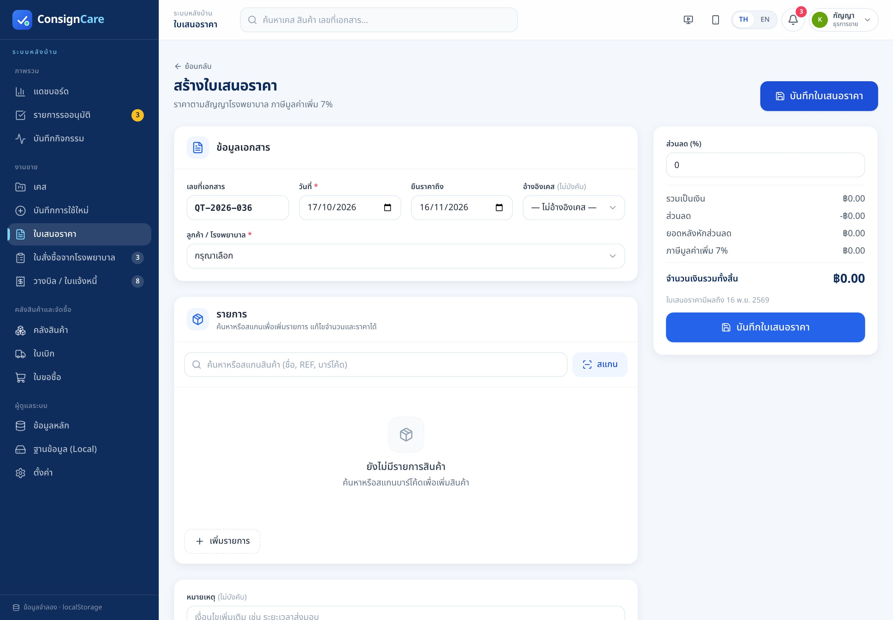
Typed once, sent as the hospital expects it.
- Quotation from the case usage at the hospital's contract price, VAT 7%, LOT / SN on every line.
- A4 PDF and Excel for quotation, requisition and invoice. Excel keeps live formulas for totals.
- Opens over any screen, on the phone or the back office, without leaving the case.
- Send by email or LINE; the PO reply is matched back to the quotation.
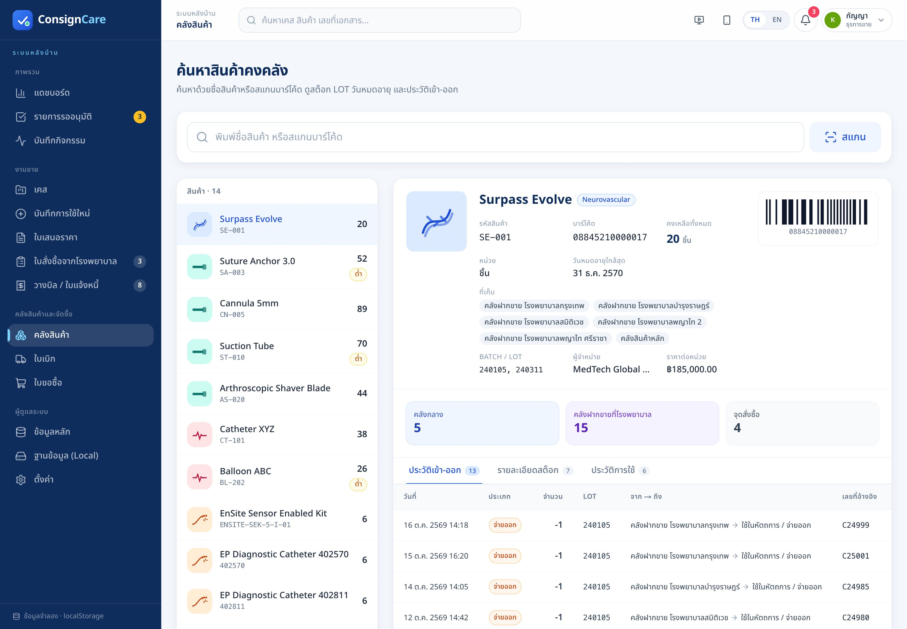
Every lot's location and expiry is known.
- Stock by lot and location: warehouse and each hospital's consignment shelf.
- Usage cuts hospital stock; the requisition refills it from the warehouse.
- Below reorder point raises a purchase request → approval → supplier PO → goods receipt with lot and expiry.
- Expiry watch 90 days ahead so lots are rotated before they are written off.
The whole system is designed in Truss, from outcomes to the release plan.
5 outcomes, 5 personas, business canvas, journey, value proposition, SWOT / TOWS, impact map.
Use cases, flows, 7 swimlanes and acceptance criteria in Gherkin.
ER and class model, 5 sequence diagrams, architecture, 19 stack choices.
SQL schema, unit, component, API and page‑transition tests, release plan.
A plain TypeScript stack, hosted in Thailand.
- Next.js · mobile PWA + back office
- Tailwind CSS + shadcn/ui
- ZXing / zxing‑wasm · scanning on the device
- NestJS · state machines, repositories
- BullMQ on Redis · queue, schedules
- Outbox · send exactly what was committed
- PostgreSQL + Prisma
- Amazon S3 · photos, documents
- Audit trail on every decision
- Claude vision · claude‑opus‑5‑5, structured output
- Barcode fallback, then manual
- Playwright Chromium + exceljs · PDF, Excel
- LINE Messaging API + Amazon SES
- AWS ECS Fargate · ap‑southeast‑7 (Bangkok)
- Auth.js with Entra ID / Google
- OpenTelemetry, Grafana, Sentry · GitHub Actions
Click through the whole case, on any laptop, with no server.
| Real | Barcode decoding on the device, PDF and Excel files, both apps, approvals, stock movements, TH / EN. |
| Ready | Claude vision reading; it switches on when an API key is set on the server. |
| Simulated | Email, LINE, SSO and the hospital's PO reply. EP product names and prices are placeholders. |
| Data | The browser's localStorage is the database: one key per table, backup, restore and reset in the back office. |
Open the phone app and the back office in two tabs; a case confirmed on the phone appears in the back office at once.
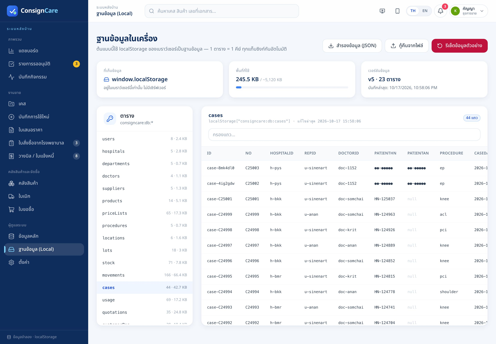
What we need to move from prototype to pilot.
Real EP catalogue
Product names, contract prices and reorder points for the Phayathai Sriracha EP items.
Switch on AI reading
Set the API key and measure accuracy on a month of real sheets against the 3‑minute target.
PDPA sign‑off
Confirm that HN / AN only are kept, names and birth dates never stored, and photos retained for the agreed period.
Pilot one hospital
One hospital, two reps, one admin for four weeks; track billed share and usage‑to‑invoice days.